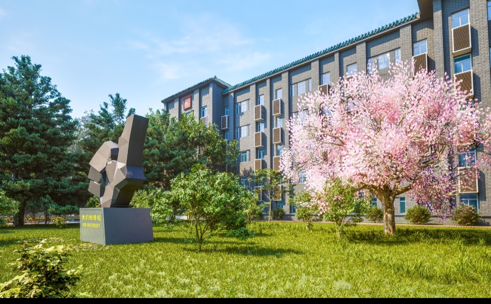
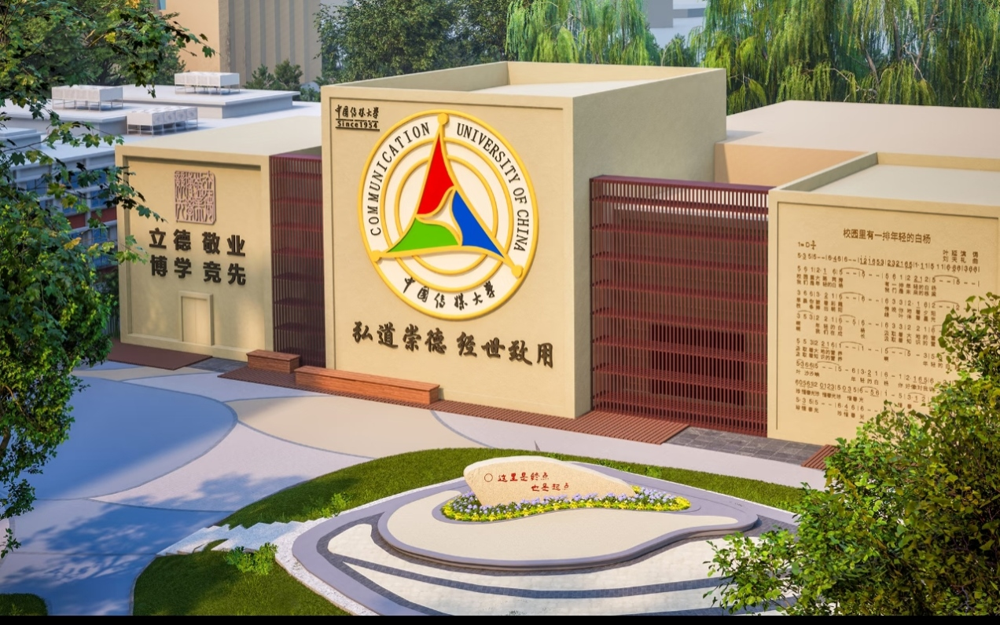

cucafl 音色融合实验室
聚焦语音音色建模、多模态情感计算与沉浸式媒体交互技术。
Speech timbre modeling, multimodal emotion recognition, and immersive media interaction.
课题组负责人
涂中文 高级工程师 / 硕士生导师
中国传媒大学 信息与通信工程学院
涂中文，中国传媒大学信息与通信工程学院高级工程师。主要从事演播室、录音棚及多媒体系统的设计、运行、管理和维护工作。研究方向包括融合媒体技术、语音建模和虚拟现实。担任《广播电视技术概论》课程主讲教师。
🎓 教育背景
- 博士 视听传播（视听传播教育部重点实验室） 中国传媒大学
- 硕士 电视工程 中国传媒大学 · 2004 – 2006
- 学士 电视工程 中国传媒大学 · 2000 – 2004
📖 主讲课程
广播电视技术概论 (Introduction to Radio and Television Technology)

研究方向
课题组聚焦于媒体智能与语言交互的前沿探索，主要涵盖以下方向
语音建模与情感计算
基于深度学习的语音情感识别、语音合成与音色客观评价。多模态情感识别中图神经网络的创新应用，数据增强策略下的特征融合模型。
虚拟现实与沉浸式交互
基于虚拟现实的声光交互系统研究，探索沉浸式媒体环境下的人机交互新模式。多感官融合交互技术。
智能音视频处理
基于深度学习的智能视频处理与分析。多模态视听信息的融合、理解与生成。云端广播管理系统中的实时监控模块设计。
融合媒体技术
全媒体语境下的广播创作约束机制研究。融合媒体环境下的内容生产、分发与评价系统。压缩域客观音质评价方法。
音频声学场景分析
基于SVM和多特征融合的声学场景分类算法研究。智能声学传感器源开发。中文广播语音情感数据库建设。
AI 辅助与智能系统
面向听力障碍者的智能机器人系统开发。青少年体质健康能力框架系统。音乐艺术治疗辅助改善阿尔茨海默症。
论文发表
课题组代表性学术论文与专利成果
一作/通讯 First / Corresponding Author
Multimodal Emotion Recognition Based on Graph Neural Networks
Applied Sciences, 15(17), 9622 · 2025-08-30
提出创新图神经网络框架，融合分层融合策略与双层图架构，突破多模态情感识别的关键技术瓶颈，达到新的SOTA性能。
A Feature Fusion Model with Data Augmentation for Speech Emotion Recognition
Applied Sciences, 13(7), 4124 · 2023-03-22
提出结合数据增强与深度学习/统计特征融合的新颖语音情感识别方法，克服小数据集挑战，显著提升分类精度。
Establishment of Chinese Speech Emotion Database of Broadcasting
· 2021-11-18
建立中文广播语音情感数据库，为情感识别研究提供标准化数据基础。
Evaluation Method of Timbre Thickness for Speech Based on CNN
· 2019-06-18
基于CNN的语音音色厚薄度客观评价方法研究。
基于特征融合矩阵语音音色的厚薄度客观评价
· 2018-05-01
提出基于特征融合矩阵的语音音色客观评价指标。
参与指导 Contributing Author Papers & Patents
Multi-speaker Chinese News Broadcasting System Based on Improved Tacotron2
· 2023-05-03
Design and Implementation of Web Socket-Based Monitoring Module for Cloud Broadcasting Management System
· 2022-10-04
A Study on the Speech Timbre Space Based on Subjective Evaluation
· 2021-10-29
A Virtual Reality-Based Sound and Light Interaction System
· 2021-07-16
Research on SVM-based Acoustic Scene Classification Algorithm with Multi-feature Fusion
· 2020-01-15
Objective Audio Quality Evaluation Method Based on Compressed Domain
· 2018-08-01
科研项目
课题组承担的主要科研项目
Music Art Therapy for the Improvement of Alzheimer's Disease
项目编号: HW25074 · 2025-04-18
Development of the First China-Indonesia Bilingual Writing Simulation
项目编号: HG24005 · 2024-01-12
System and Development of a "Youth Physical Health" Competency Framework
项目编号: HW23102 · 2023-06-06
Development of an Intelligent Robot System for the Hearing Impaired
项目编号: HG22032 · 2022-06-20
Constraints on Broadcasting Creation in the All-Media Context
项目编号: HW22024 · 2022-02-25
Intelligent Acoustic Sensor Source Development
项目编号: HG20041 · 2020-11-08
Broadcasting and Hosting Teaching & Research Evaluation System
· 2019-05-27
Emotional Speech Data Collection and Development
项目编号: HG1911 · 2018-12-12

加入我们
期待优秀的你加入课题组，一起探索媒体智能的边界
学术硕士
信息与通信工程
研究方向：智能视频处理
- 招收信息与通信工程学术学位硕士研究生
- 从事智能视频处理与分析研究
- 具备信号处理或机器学习基础者优先
专业硕士
人工智能
研究方向：智能音视频技术
- 招收人工智能专业学位硕士研究生
- 从事智能音视频技术研发
- 具备编程能力和深度学习基础者优先